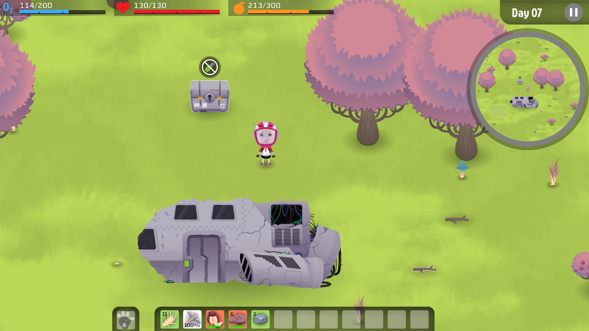
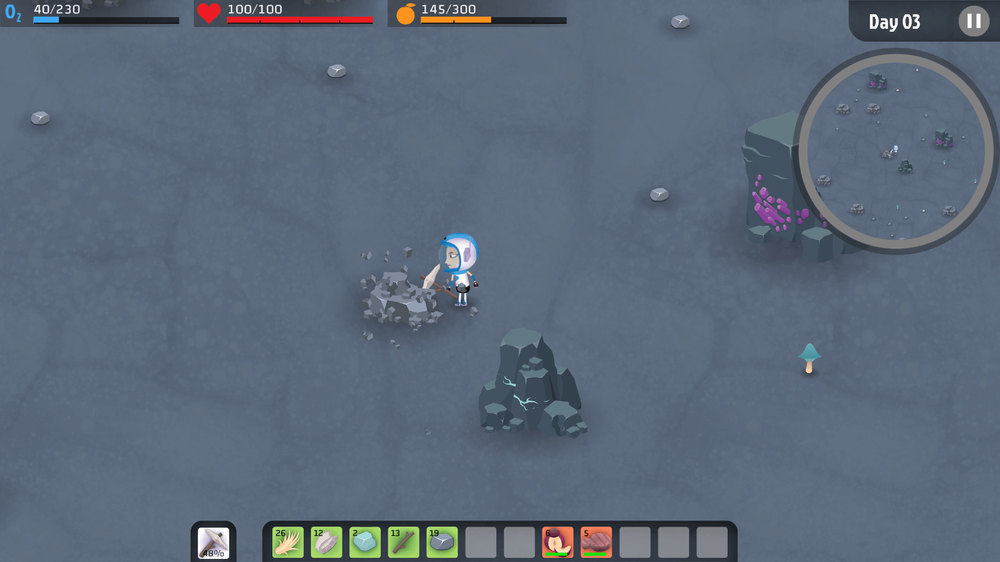
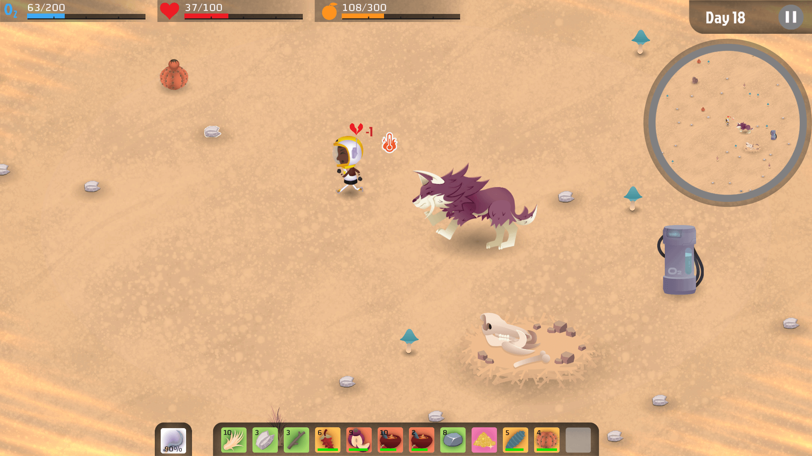
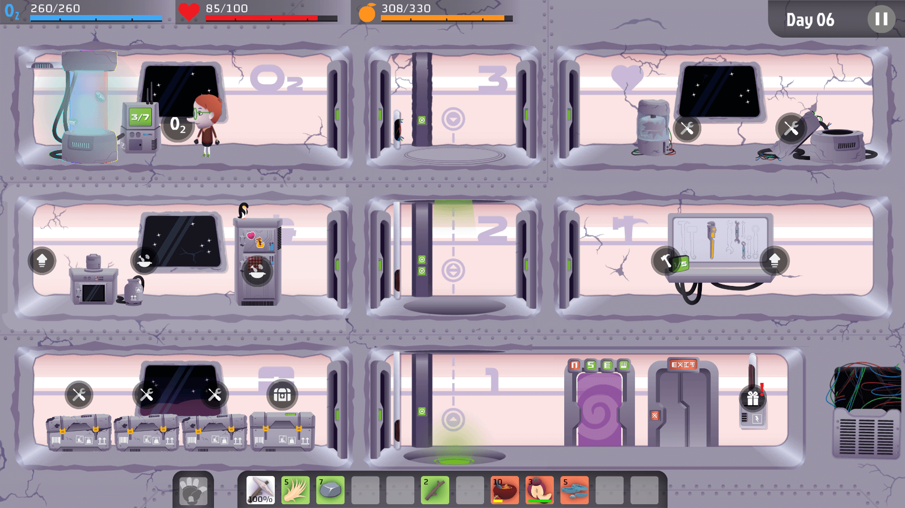
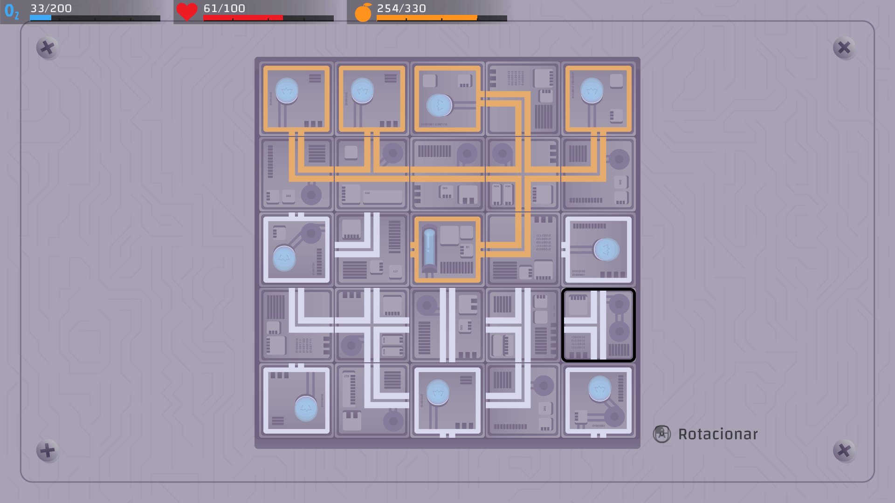

Factsheet
- Developer: LUDO Thinking
- Based in: Brazil
- Release date: November 2025
- Platforms: PC (Steam)
- Website: Kind Heart Survivors (Steam)
- Press contact: renata@ludothinking.com
- Social Media:
Description
Kind Heart Survivors is the newest survival adventure from the Brazilian indie studio LUDO Thinking.Created for players who love to explore and experiment, it takes you to a mysterious planet full of resources, secrets, and unexpected challenges.
Your mission: survive, adapt, and thrive. Collect materials, craft tools, cook meals, and explore diverse biomes while repairing your ship and uncovering the mysteries of this world. Every choice shapes your journey, encouraging creativity, strategy, and problem-solving in a fun and immersive way.
Features
- 🧭 Explore & Discover – Journey through unknown biomes, gather resources, and test your planning skills.
- 🪓 Build & Create – Craft essential survival items from collected materials.
- 🍳 Cook & Evolve – Combine ingredients to prepare meals that boost your energy and abilities.
- 🌅 Charming Visuals – Colorful art, friendly characters, and an immersive soundtrack make survival an enjoyable experience.
Images





Logos e Icons
Access the full press kit below:
Videos
🎬 Official trailer
🕹️ Gameplay